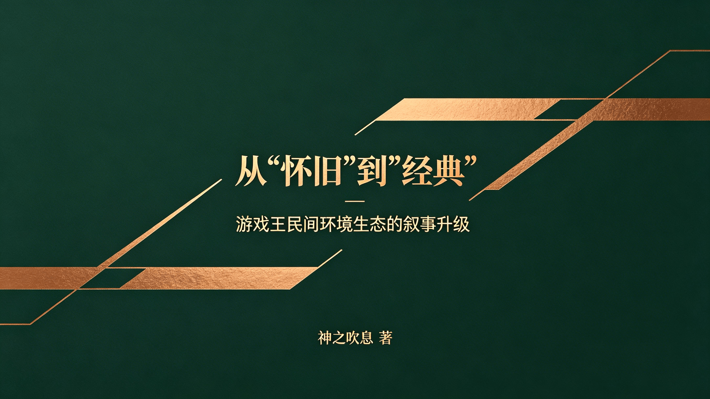
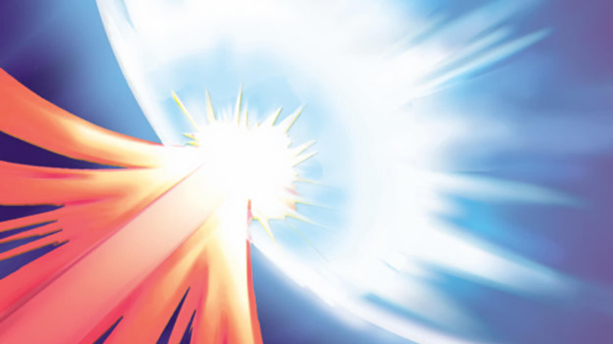
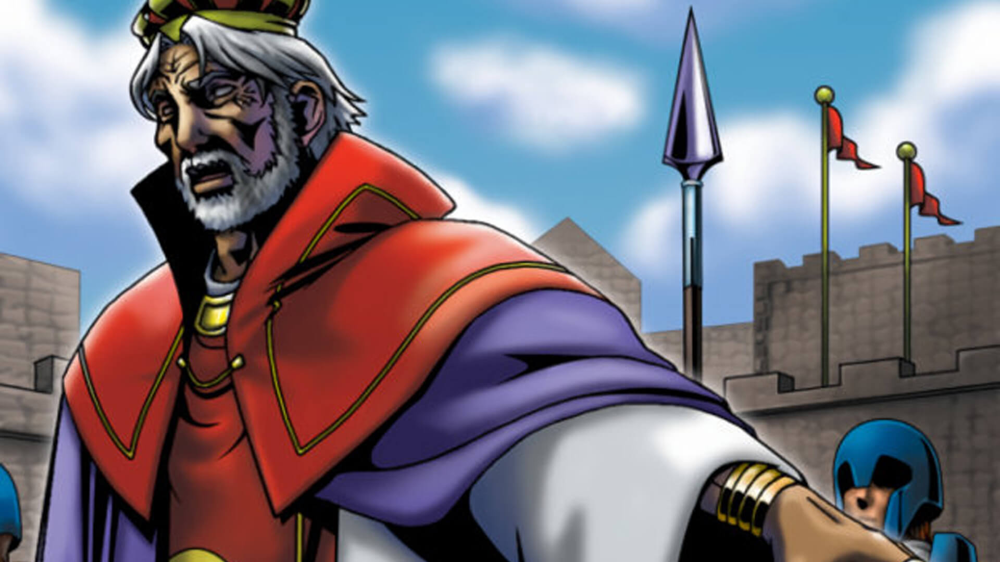
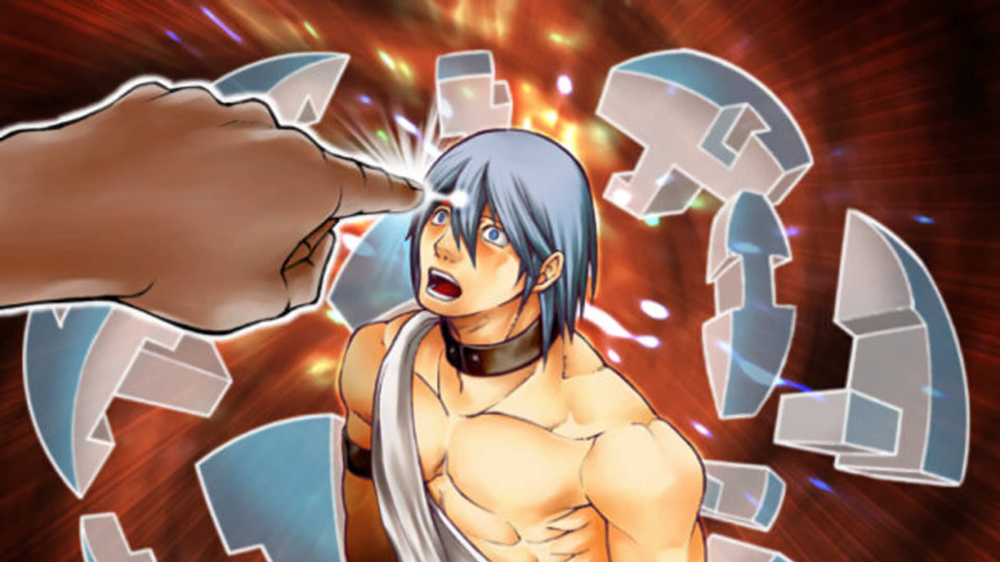
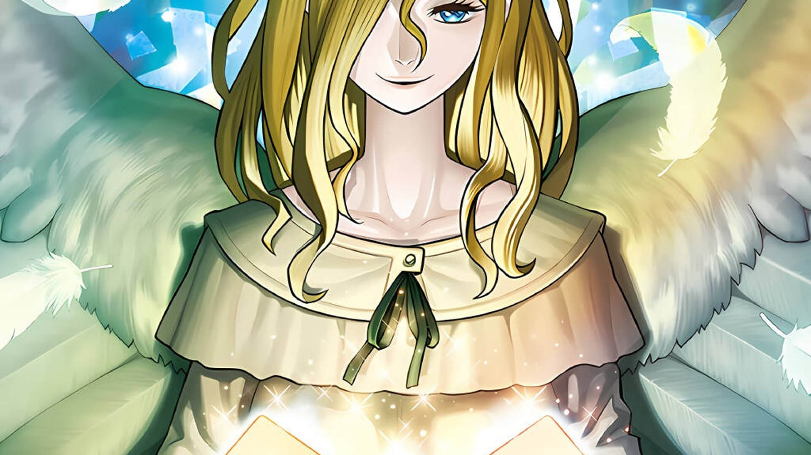

作者：神之吹息 发表日期：2026年4月3日 本文同时发表在“游戏王多元环境联合会”B站账号：https://www.bilibili.com/opus/1186906210770616340
本文/视频参照CC BY（署名）协议开放转载，敬请保留原链接与作者信息噢~感谢传播！支持知识开放、协作与共享。
欢迎各位读者姥爷看完后理性讨论，也欢迎I人读者姥爷私信投稿。私信、私聊投稿视为同意本人在展示投稿内容的同时展示头像及ID等信息实名收录到本文附加部分或新开设的包含“投稿-回应”类型内容的文章、视频。如有深度理解，也欢迎撰写长文公开讨论。
本文基于自2017年起九年游戏王社群（主要是408环境线上、线下社群）运营的真实经验、在各游戏王民间环境社群内交流所见所闻，及期间的个人感想。
九年民间环境运营，我目睹了一群人对民间环境的热爱，如何被身上的“怀旧”“遗老”等标签困住。为何千年棋牌能成经典，而我们却被嘲“遗老”？这不是游戏的问题，是叙事的问题。本文尝试作一次认知升级：从怀旧到经典，从回忆到传承。带你看清如何撕掉偏见标签，把我们守护的民间环境，活成能跨代传承的经典。
同时欢迎各位游戏王圈外的读者姥爷参照本文，将对应的经验抽象总结为可以跨领域复用的广泛经验。
欢迎点赞、收藏、转发、评论。
一、开篇：一场关于“定义”的战争 二、厘清概念——“怀旧/情怀”与“经典”的本质区别 三、为什么要从“怀旧/情怀”转向“经典”？ 四、如何潜移默化实现从“怀旧/情怀”到“经典”的转化？ 五、结语：让民间环境成为这个时代的“经典”

不知各位读者姥爷有没有发现一个奇怪的现象？围棋、象棋、麻将，流传了上千年，从来没人说它们是“怀旧”“遗老”。年轻人学围棋，没人问他“你是不是在怀念古代”。可轮到游戏王的民间环境（比如408环境），画风就变了：“旧环境”“老卡池”“遗老”。为什么？难道规则稳定、策略深邃的408环境，比千变万化的围棋更“过时”？
当然不是。问题不在玩法，而在标签。“怀旧”这个词，像一顶太小太旧的帽子，硬扣在一个本可以很“经典”的东西上。它劝退新人——年轻人听到“怀旧”，第一反应是“与我无关”。它也被某些人当武器——“你们就是一群遗老自嗨”。而标签的背后，是叙事权的缺失。
我们并非只能守着 “怀旧” 的定位，更不该被不合理的标签束缚。所以，得做一件事：把“怀旧”换成“经典”。不是玩文字游戏，而是为民间环境争取它本该有的认知地位——像传统棋牌一样，跨越时间、代际与偏见，成为真正可传承的经典。
这，就是本人想与各位读者姥爷一起完成的认知升级：跳出 “怀旧” 的狭隘定义，转向 “经典” 的正向叙事，重塑民间环境的公众认知与生态自信。让 408环境等优质民间环境，像传统棋牌一样，凭借稳定规则、深邃策略，成为跨越时代、历久弥新、被全年龄段认可的经典玩法。
以下词义均来源于《现代汉语词典》（第5版，2005年）。
怀旧：[动]怀念往事和旧日有来往的人。 情怀：[名]含有某种感情的心境。 经典：①：[名]指传统的具有权威性的著作。②：[名]泛指各宗教宣扬教义的根本性著作。③：[形]著作具有权威性的。④：[形]事物具有典型性而影响较大的。
由此可见，“怀旧”的核心在于依附个人记忆与过去情绪，被动、向后看，用于民间环境标签，易被污名化为 “老旧”，难以吸引新生代，无法支撑长期生态。而“情怀”，主观情感偏好，是起步初心，但缺乏客观价值标准，不能作为环境可持续发展的核心支柱，易陷入道德化、封闭化。共通点是依赖个人记忆、情绪投射，时间属性强（“过去式”），易被污名化为“过时”“遗老”。即便这不等于说游戏不好，但依然会劝退新人、限制生态想象。
而“经典”则明确指向规则稳定、策略深邃，能跨代传承、具备独立玩法价值，且不受时间侵蚀的方向——不仅具有当下价值，而且完全有望在未来可持续，生生不息。经典不靠回忆续命，而靠当下好玩、未来可持续。现有的多个民间环境已具备经典的核心特质，只是局限于“怀旧”、未被正确叙事，以致在第一印象上就吃了大亏，需要重新定义与表达。
当然，本人不否定“情怀”，但拒绝“只靠情怀”。民间环境不仅仅是“老玩家的记忆”，而是“稳定规则下的无限博弈”——这正符合经典的词义。情怀是初心，不是标签；经典是目标，底色是价值。

说到底，一个标签决定一个生态的命运。
首先，它天然劝退年轻人。你想想，一个00后听到“怀旧/情怀环境”，第一反应是什么？“那是老一辈的东西，跟我没关系。”——还没了解玩法，人已经被标签挡在门外。本人在大学母校牌佬群里宣传408环境时，一位师弟的回答点醒了本人——“每个人的情怀都是不一样的”。即，我们以为情怀是共鸣，对方却觉得是绑架。如果真心希望广大牌佬感受民间环境的乐趣，却只宣传“怀旧/情怀”，何尝不是一种无意识的“以己度人”？生态没了新鲜血液，就只能在一群老面孔里慢慢萎缩。
其次，它给了某些人现成的攻击武器。部分优越感牌佬的“遗老”“守旧”“小圈子自嗨”等词为什么能张口就来？因为“怀旧/情怀”自己就把软肋露出来了。他们不需要了解民间环境的策略深度，只要甩出“怀旧/情怀”甚至“遗老”两个字，就能让民间环境玩家们百口莫辩——“这可是你们自己承认的，我可从没有乱编乱扣帽子哦~”
更致命的是，它限制了生态的想象力。“怀旧”是向后的，让人总在回忆里打转；“经典”是向前的，让人期待未来还能玩出什么新花样。一个总被困在缅怀过去的环境，社群里面的玩家自己都在营造出只想沉醉于以过去之虚像消极避世的“幻术”氛围中，而不去表达民间环境自身的独特魅力，那还怎么吸引想往前看的玩家？
“经典”就不一样了。它意味着“值得一直玩下去”——年轻人听到“经典”，不会觉得与自己无关，反而会好奇“这东西能成为经典，一定有点东西”，从而减少忽视、抵触，从源头上增加民间环境自我展示的机会。
它能帮我们建立正面的身份认同。从“我是怀旧玩家”到“我是经典环境的守护者”，心态完全不同——前者带着点自嘲，后者满是自信。还能让我们和围棋、象棋、麻将这些真正的经典站在一起。没有人会问“你为什么还在下围棋”，因为经典不需要解释。我们的环境，也该有这样的底气。
更重要的是，它能让那些攻击话语瞬间失效。当你的定位是“经典”，对方再喊“遗老”，就像对着珠穆朗玛峰喊“小土坡”——可笑的是他，不是你。
我们民间环境，也要有自己的“道路自信、理论自信、制度自信、文化自信”！即便只玩民间环境，那也并非不得不安于旧日的无奈或自嘲，而是对其传世魅力认同的热爱与坚持。
年轻玩家不会主动走进“怀旧”的门，但会主动探索“经典”的世界。这不是文字游戏，这是认知门槛。跨不过去，生态就会在“小圈子自嗨”里慢慢沉寂；跨过去了，才有代代相传的可能。
仔细想想，不止传统棋牌，中国四大名著、古典音乐、印在课本上的历史绘画雕塑建筑等中外艺术创造，哪个是凭借“怀旧/情怀”立于现世？依靠的还不是其丰厚的价值底蕴，令人回味无穷、意犹未尽、常品常新的精神深度？
更何况，本人在408环境的各种宣传资料中，已尽可能放弃“情怀”“怀旧”“老”“旧”等，更换为“经典”“传承”等词汇，宣传效果却并未削弱。大量真正的当年老玩家依然感到408环境契合其情怀，未有冒犯。也就是说，叙事转向经典后，不仅“情怀”能被完美包容，而且丝毫不影响展示面对未来的自信——表达正面化、信息量增加，岂不美哉？
所以，换标签不是玩概念，是救命。

核心原则：不争论、不纠正、不硬推，用“润物细无声”的方式，让玩家主动认可“这是经典”。
从自身做起，所有宣传、群聊、比赛文案统一替换：
“怀旧/情怀环境” → “经典环境”。
“老卡池” “旧环境”→ “经典卡池”“民间环境”。
“情怀玩家” “遗老” → “资深玩家”“传承玩家”。
规避词（不强求他人）：不再主动使用“怀旧、老旧、遗老”等自我矮化词汇。
宣传文案抛砖引玉：
408环境规则省流版 ▷ 采用大师规则2020（不适用额外怪兽区） ▷ 改订前效果+最新裁定 ▷ 传承自2006年3月限制卡表+第四期卡池 *保留经典策略框架，同时规避旧规则复杂度
强调策略深度：多产出卡组思路、对局逻辑、环境combo（组合技）内容，像围棋讲定式一样讲民间环境的博弈。
展示代际活力：多发年轻玩家的对局视频、访谈，让“00后、10后也爱经典”成为可见事实。
价值锚定：反复强调平衡性、纯粹性——“无丧病超模卡，媲美甚至超越OCG环境的操作考验”。本人在大学母校牌佬群举办比赛的场外推广活动中，给当时的OCG环境牌佬参赛者轻度体验了408环境的预组卡组，部分体验、围观牌佬甚至兴奋到高呼“这不比OCG环境好玩多了？”（笑）
如有条件，可以统计玩家年龄分布、比赛参与人数、卡组多样性，用数据证伪“只有遗老”。
活动分享：多放年轻人日常打牌、参赛的照片、战报信息。同时欢迎观看本人与母校在校师弟们的408环境决斗视频。（笑）
弱化资历：不说“老玩家”，只说“某民间环境玩家”。
日常渗透：偶尔提一句“最近好多学生党入坑，说这环境经典”。
不争辩：别人说“怀旧”，不反驳，只用事实回击——发年轻玩家数据、发精彩对局。
每提必带“经典”：形成语言肌肉记忆，不突兀的情况下多说“经典”。
借棋牌背书：偶尔类比但不说教——“围棋没人说怀旧，经典就是经典”。
办新人体验赛、教学局。本人在每年7-8月毕业季，会举办408环境线上赛“毕业杯”，借用纯预组卡组固定构筑的比赛，大幅降低新人体验、参与比赛的成本，以便进一步转化长期入坑。
推“新星战报”专栏，让年轻人当主角。本人长期在自己408环境线下比赛战报中强调初次参赛、外地玩家数的同时，一并列出“初中生”“高中毕业生”等年轻玩家，正是在落地本方案。
建可持续的教学-比赛-社群链路。本人在B站发布多个教学视频文章、不定期举办比赛（包括新生杯）、维护千人线上社群，为408环境玩家们提供更好的一站式入坑流程和长期打牌氛围、基建。

经典从来不是天生的。围棋下了四千年，不是靠“老祖宗传下来的”这几个字撑着，而是一代又一代人走进去，发现它好玩、耐玩、值得一直玩下去。
我们的民间环境也一样。408（及SP群改版）、506、2011探索者、1103等环境，它们不缺策略深度，不缺平衡性，不缺愿意投入的玩家。缺的只是一次认知上的正名——从“怀旧”到“经典”，从“回忆”到“传承”。这不是文字游戏。这是为热爱争取它本该有的位置。
从今天起，本人建议规避自称“怀旧”，开始自称“经典”。用行动、用内容、用带给大家的笑容，重新定义我们热爱的东西。
怀旧是向后看，经典是向前走。我们选择向前。愿我们的环境，像传统棋牌一样，跨越时间、代际与偏见，成为真正可传承的经典。毕竟情怀时间长了就没了，而经典足以穿越时空，进行跨时代的对话。